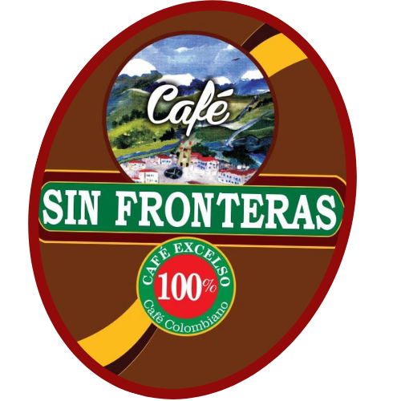
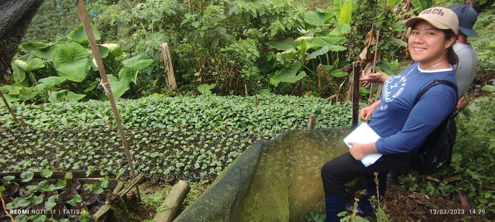
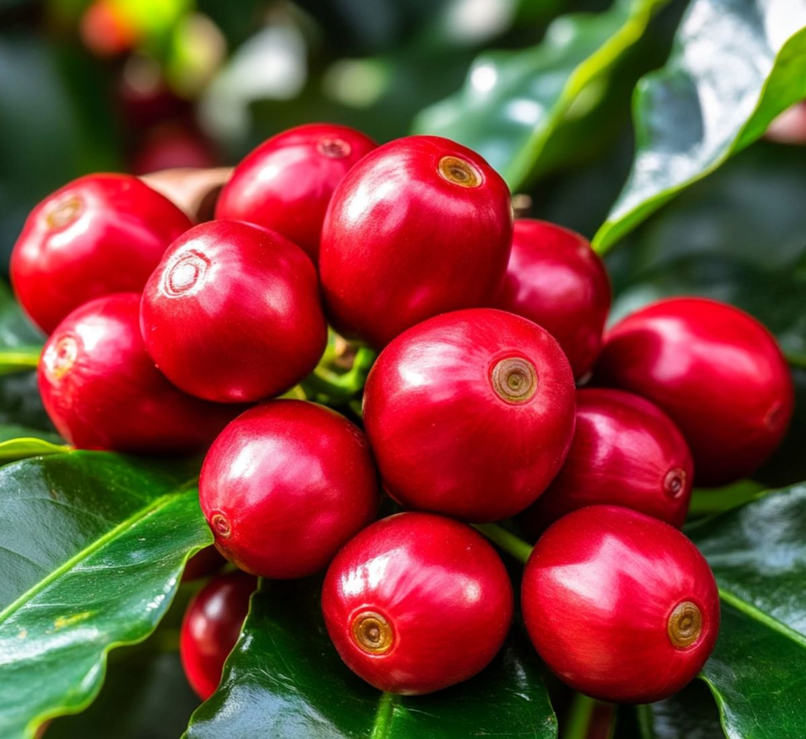
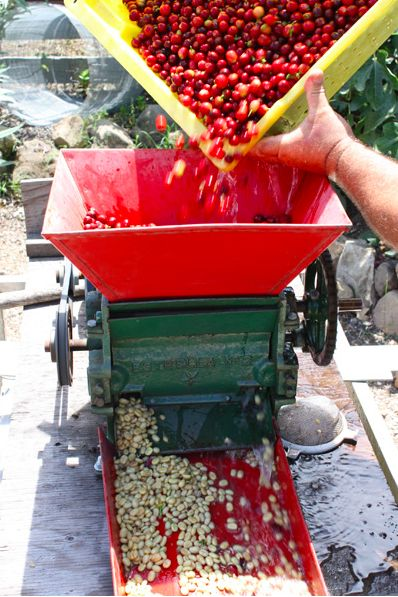
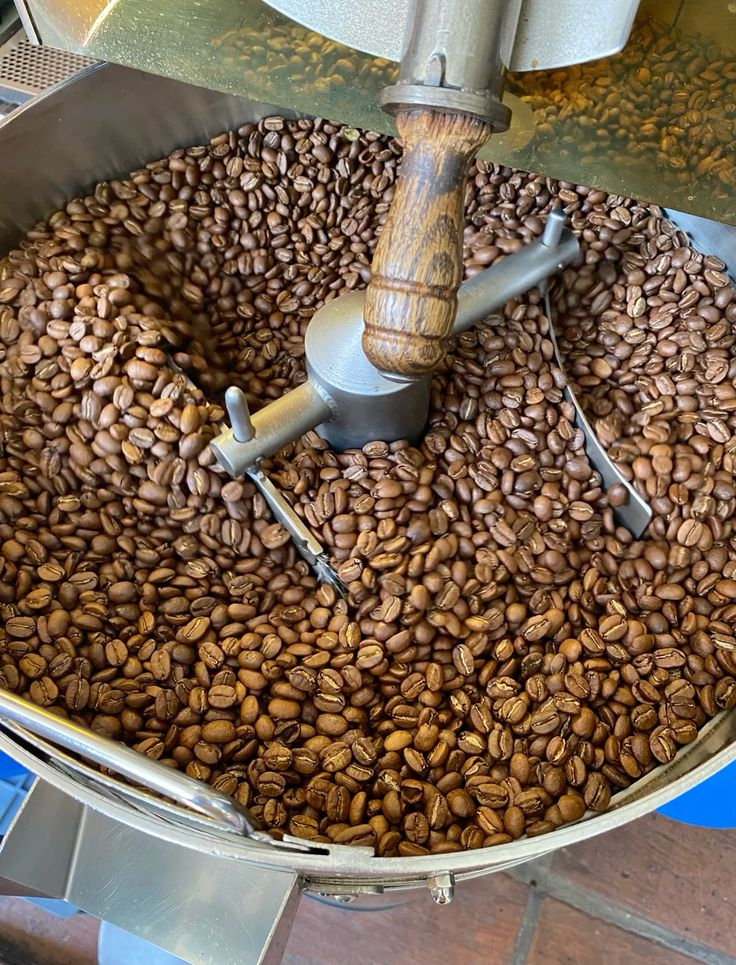
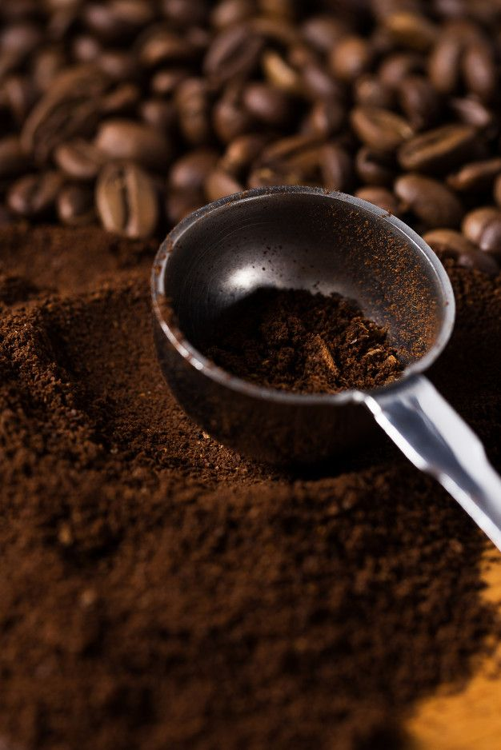

En Café Sin Fronteras, cada grano nace en la tierra fértil del corregimiento de San Fernando, en las montañas del Líbano, Tolima. Nuestro café es fruto del trabajo colectivo de 30 familias campesinas unidas en la Asociación de Productores Agropecuarios de San Fernando (APROASANF), quienes cultivan con dedicación, tradición y respeto por la naturaleza.

Siembra: El ciclo de excelencia comienza en nuestras fincas, donde el café se cultiva bajo sombra natural, en suelos fértiles y biodiversos. Este entorno favorece un crecimiento lento y equilibrado del fruto, permitiendo que cada grano desarrolle una concentración óptima de azúcares y compuestos aromáticos.

Cosecha: La recolección es 100% manual y selectiva. Nuestros caficultores, con experiencia transmitida por generaciones, escogen únicamente las cerezas en su punto exacto de maduración, asegurando uniformidad en el lote y garantizando una materia prima de la más alta calidad.

Beneficiado: Aplicamos un beneficiado artesanal que combina tradición y sostenibilidad. Las cerezas seleccionadas son despulpadas cuidadosamente y secadas al sol, un método que conserva la integridad física y sensorial del grano, además de minimizar el impacto ambiental.

Tostado: El tueste se realiza en lotes pequeños y bajo estrictos parámetros de control, adaptando el perfil térmico a las características de cada cosecha. Este proceso resalta el equilibrio entre aroma, acidez y cuerpo, revelando la identidad única de nuestro café.

Molienda: Para preservar todo el potencial sensorial, la molienda se ajusta al método de preparación elegido, garantizando una extracción precisa y una taza que exprese fielmente el trabajo y dedicación presentes en cada etapa del proceso.
Hecho aquí, pensado para el mundo.